Radical honesty Radikale Ehrlichkeit
Clear costs, clear decisions, clear yes or no. No hidden commission theatre. Klare Kosten, klare Entscheidungen, klares Ja oder Nein. Kein verstecktes Provisions-Theater.
Wertstatt Brand Style Guide
Wertstatt is positioned as a calm, independent financial architecture partner: serious enough for finance, human enough for families, and precise enough to feel different from classic product sales. Wertstatt positioniert sich als ruhiger, unabhaengiger Partner fuer Finanzarchitektur: serioes genug fuer Finanzen, menschlich genug fuer Familien und praezise genug, um sich klar vom klassischen Produktverkauf zu unterscheiden.
01 / Brand Essence
The brand should feel like relief: someone finally sorts the entire financial structure, explains it without jargon, and stays responsible over time. Die Marke soll sich wie Entlastung anfuehlen: Endlich ordnet jemand die gesamte Finanzstruktur, erklaert sie ohne Beraterdeutsch und bleibt langfristig verantwortlich.
Clear costs, clear decisions, clear yes or no. No hidden commission theatre. Klare Kosten, klare Entscheidungen, klares Ja oder Nein. Kein verstecktes Provisions-Theater.
Wertstatt sells no isolated shortcut. It builds a documented financial setup. Wertstatt verkauft keine isolierte Abkuerzung. Es entsteht ein dokumentiertes Finanz-Setup.
Financial decisions are checked again when life changes: job, children, home, income, risk. Finanzentscheidungen werden wieder geprueft, wenn sich das Leben veraendert: Job, Kinder, Haus, Einkommen, Risiko.
02 / Logo System
The full logo builds trust and recognition. Smaller contexts should remove detail before readability suffers. Das vollstaendige Logo baut Vertrauen und Wiedererkennung auf. In kleineren Anwendungen wird Detail reduziert, bevor die Lesbarkeit leidet.

Primary
Best for covers, reports, presentation title slides, website hero sections and high-value print applications. Ideal fuer Cover, Reports, Praesentations-Titelfolien, Website-Heroes und hochwertige Print-Anwendungen.

Digital default
Recommended for website headers, email signatures, LinkedIn banners and narrow layouts. Empfohlen fuer Website-Header, E-Mail-Signaturen, LinkedIn-Banner und schmale Layouts.

Compact
Use when the tagline is too small, but the brand name still has enough space. Nutzen, wenn der Claim zu klein wird, aber der Markenname noch genuegend Raum hat.
.svg)
Smallest use
Favicon, social avatar, app icon, watermark, tiny UI component. Do not use as a replacement for brand introduction. Favicon, Social Avatar, App Icon, Wasserzeichen, kleine UI-Elemente. Nicht als Ersatz fuer die Markeneinfuehrung verwenden.
Clear Space Schutzraum
Use the shown safety zone when the logo appears near copy blocks, diagrams, illustrations, interface elements or partner marks. The grey text in the diagrams is only a placement example. The diagrams switch with the light/dark preview; if the layout feels crowded, increase the distance rather than reducing the logo. Den dargestellten Schutzraum nutzen, wenn das Logo neben Textbloecken, Diagrammen, Illustrationen, Interface-Elementen oder Partnerlogos steht. Der graue Text in den Schemata ist nur ein Platzierungsbeispiel. Die Schemata wechseln mit der Light/Dark-Vorschau; wenn das Layout eng wirkt, den Abstand vergroessern statt das Logo zu verkleinern.
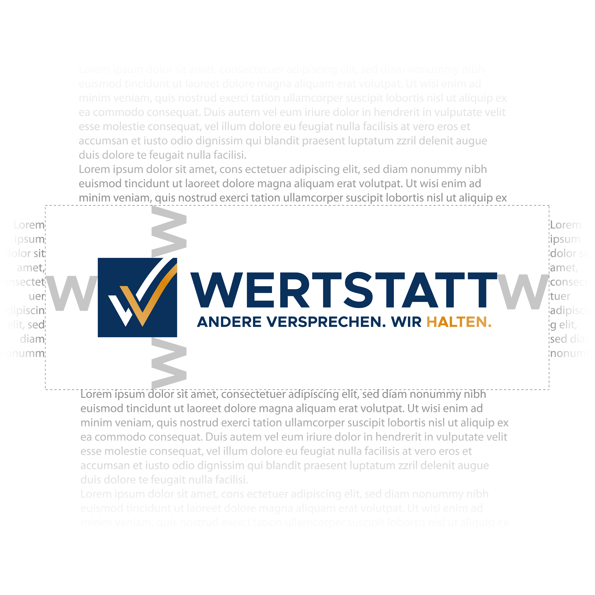
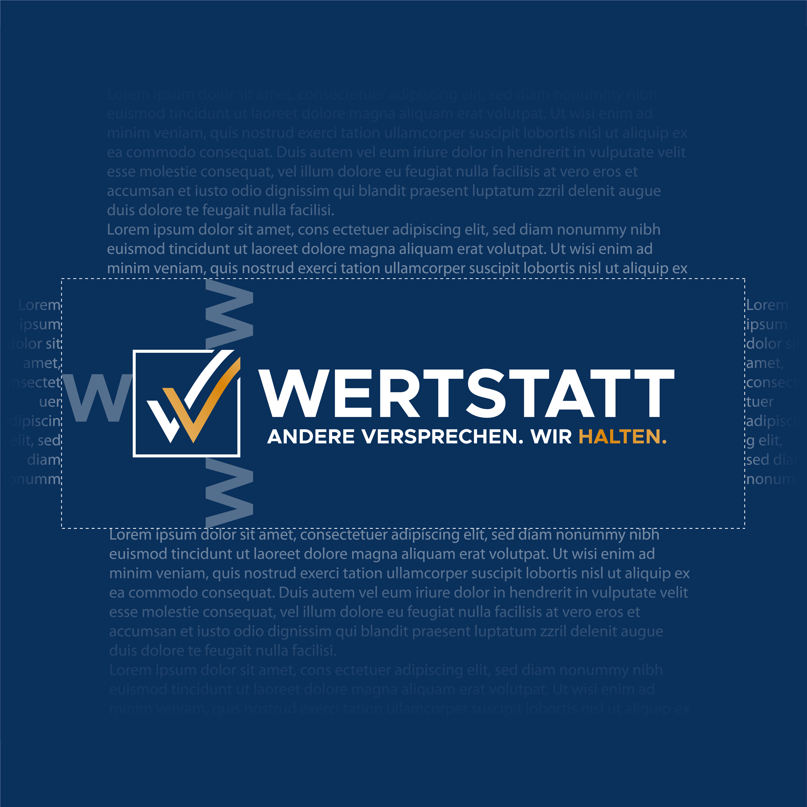
Recommended for headers and co-branded layouts. Keep the logo visually separate from adjacent copy, illustrations and other trademarks. Empfohlen fuer Header und Co-Branding-Layouts. Das Logo klar von angrenzendem Text, Illustrationen und anderen Marken trennen.
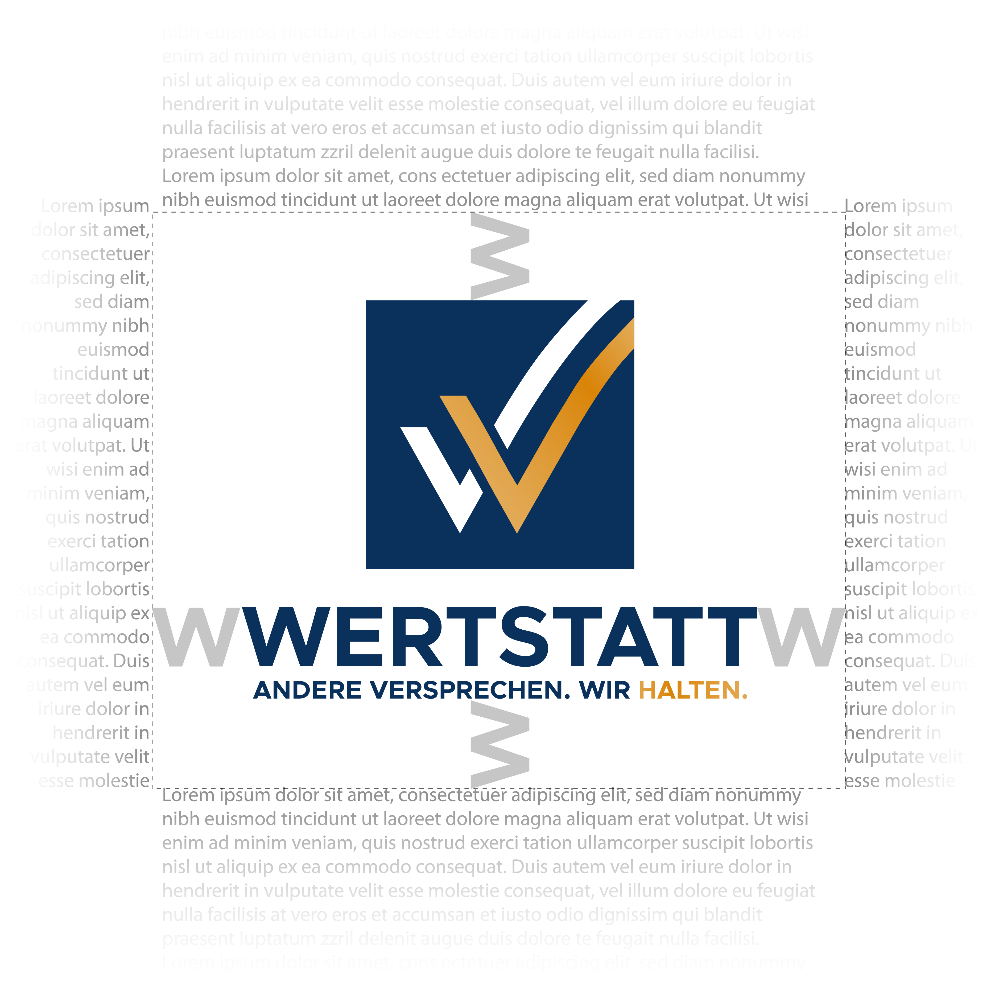
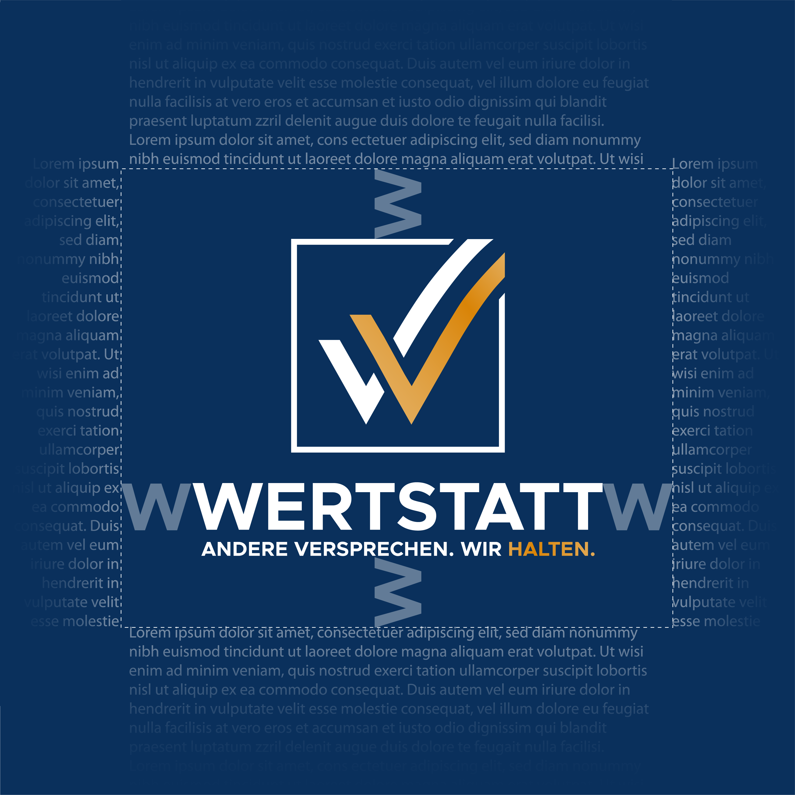
Use for covers and presentation openings. The vertical lockup needs air above, below and around the icon-wordmark relationship. Fuer Cover und Praesentationsstarts nutzen. Die vertikale Kombination braucht Luft oberhalb, unterhalb und rund um die Zeichen-Wortmarken-Beziehung.
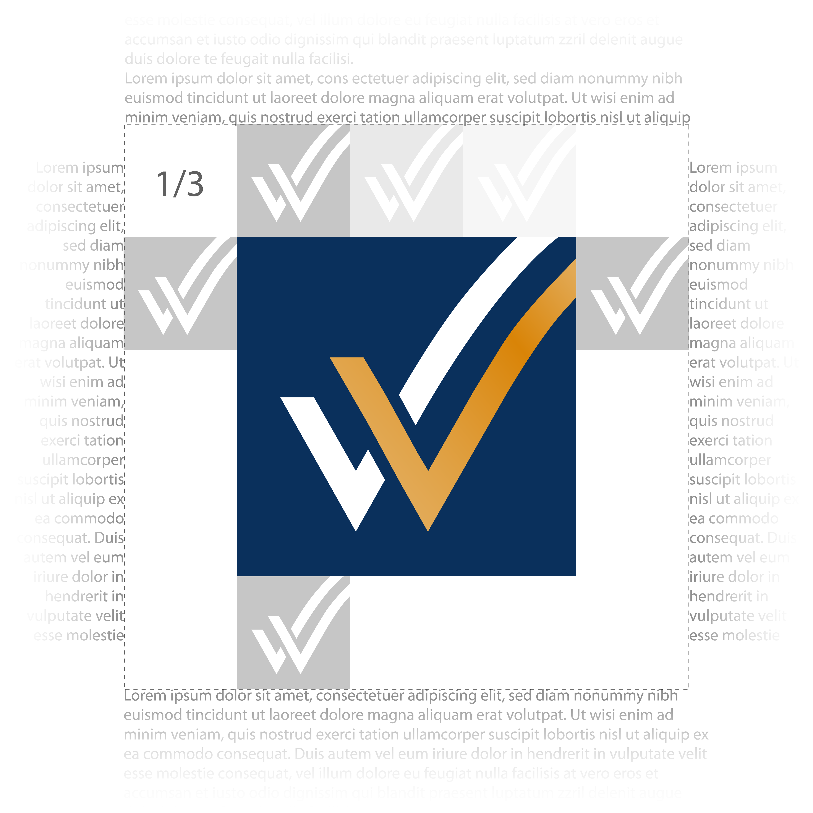
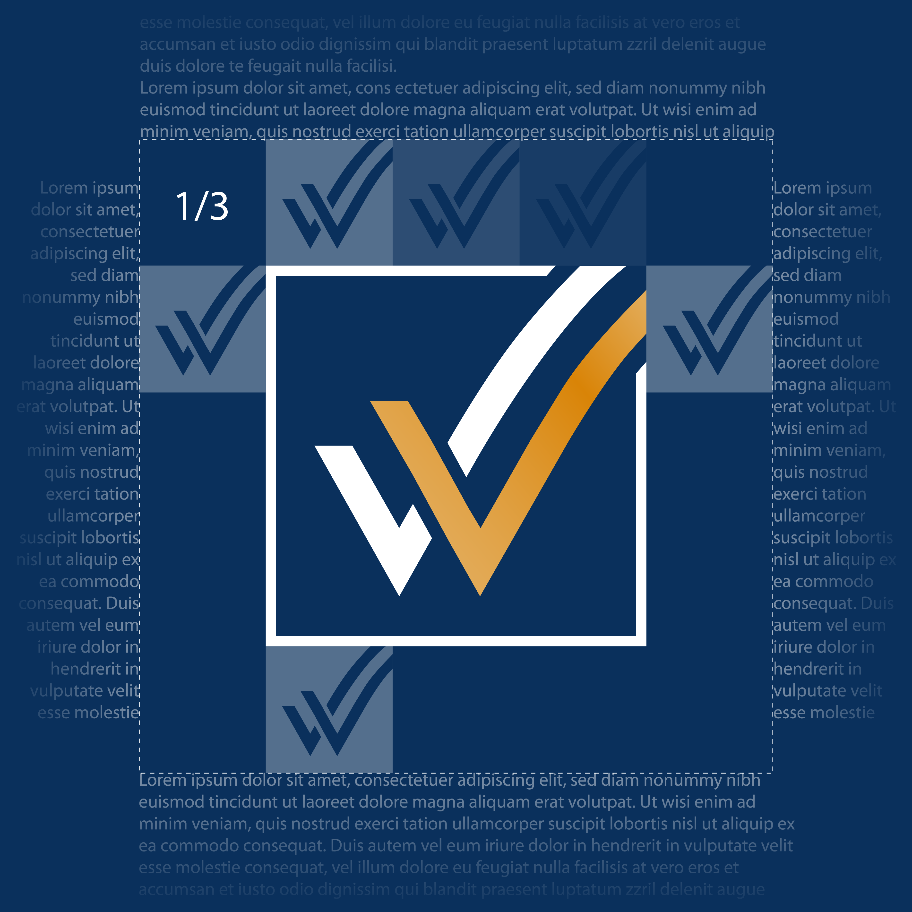
The icon may sit near UI or social elements, but never tightly. Keep at least the indicated one-third safety zone around the mark. Das Zeichen darf neben UI- oder Social-Elementen stehen, aber nie zu eng. Mindestens den dargestellten Ein-Drittel-Schutzraum einhalten.
03 / Logo Size & Responsiveness
If the tagline cannot be read without effort, remove it. If WERTSTATT loses clarity, use the icon. Wenn der Claim nicht ohne Anstrengung lesbar ist, wird er entfernt. Wenn WERTSTATT an Klarheit verliert, wird das Zeichen genutzt.
Full logo
Horizontal
Wordmark
Icon
| Size / situation Groesse / Situation | Use Version | Recommendation Empfehlung |
|---|---|---|
| 320 px+ digital / 60 mm+ print | Full logo with tagline | Covers, hero blocks, reports, presentation openers. Cover, Hero-Bereiche, Reports, Praesentations-Opener. |
| 180-319 px / 35-59 mm | Logo without tagline or horizontal combination | Use when the slogan starts to lose readability. Nutzen, sobald der Claim an Lesbarkeit verliert. |
| 96-179 px / 20-34 mm | Wordmark | Navigation bars, signatures, compact documents. Navigation, Signaturen, kompakte Dokumente. |
| 16-95 px / below 20 mm | Icon only | Favicons, app icons, social avatars, small UI states. Favicons, App Icons, Social Avatars, kleine UI-Zustaende. |
04 / Color System
Navy carries seriousness and calm. The gold is not a flat decorative color: it comes from the approved logo gradient and should be treated as a precise brand asset. Navy traegt Seriositaet und Ruhe. Das Gold ist keine flache Schmuckfarbe: Es stammt aus dem freigegebenen Logoverlauf und sollte als praezises Marken-Asset behandelt werden.
05 / Typography
The logo uses Metropolis. The family is licensed under the SIL Open Font License and can be used for the brand identity, print and digital applications. Das Logo nutzt Metropolis. Die Familie steht unter der SIL Open Font License und kann fuer Brand Identity, Print und digitale Anwendungen genutzt werden.
Metropolis ExtraBold / Headlines
Andere versprechen. Wir halten.
Metropolis Regular / Body
Wertstatt bringt Struktur in Versicherungen, Vorsorge und Vermoegensaufbau: transparent, verstaendlich und langfristig betreut.
06 / Print & Gold Finishing
In standard print, use the CMYK gold. For premium touchpoints, metallic ink or foil can support the promise of reliability, but should be reserved for restrained details. Im Standarddruck wird das CMYK-Gold genutzt. Fuer hochwertige Kontaktpunkte koennen Metallic-Farbe oder Folie das Qualitaetsversprechen unterstuetzen, aber nur fuer reduzierte Details.
Reports, PDFs, letterhead, brochures. Always request a proof because navy and gold shift strongly by paper. Reports, PDFs, Briefpapier, Broschueren. Immer einen Proof anfordern, da Navy und Gold je nach Papier stark variieren.
Good for business cards and premium folders when foil is too formal or expensive. Gut fuer Visitenkarten und hochwertige Mappen, wenn Folie zu formal oder zu teuer ist.
Reserve for the W icon, HALTEN, folder covers or invitation cards. Do not foil every logo application. Fuer W-Zeichen, HALTEN, Mappen-Cover oder Einladungskarten reservieren. Nicht jede Logo-Anwendung folieren.
07 / Usage Rules & Dark Mode

This dark-line variant keeps the white and gold symbolism intact: white for transparency and legality, gold for capital growth and preserved value. Use it as a conditional dark-mode set, not as the default identity. Diese Dark-Line-Version erhaelt die Symbolik aus Weiss und Gold: Weiss fuer Transparenz und Legalitaet, Gold fuer Kapitalaufbau und bewahrten Wert. Als bedingtes Dark-Mode-Set nutzen, nicht als Standard-Identitaet.
08 / Applications
Wertstatt should look like an organized advisory system. The most useful carriers are documents, digital trust points and premium-but-practical client gifts. The previews switch with the theme demo: light carriers in light mode, dark carriers in dark mode. Wertstatt soll wie ein geordnetes Beratungssystem wirken. Die wichtigsten Traeger sind Dokumente, digitale Vertrauenspunkte und hochwertige, aber praktische Kundengeschenke. Die Vorschauen wechseln mit dem Theme-Demo: helle Traeger im Light Mode, dunkle Traeger im Dark Mode.
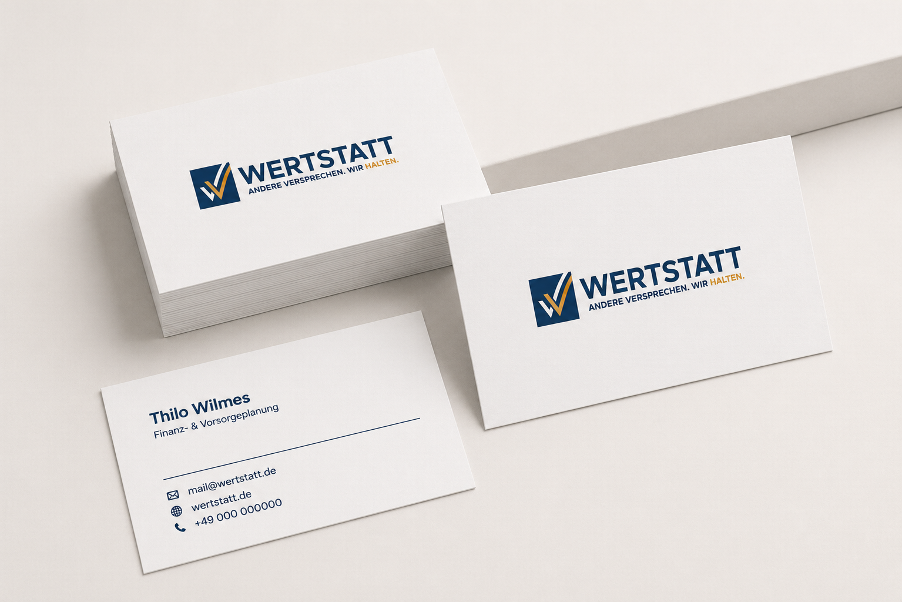
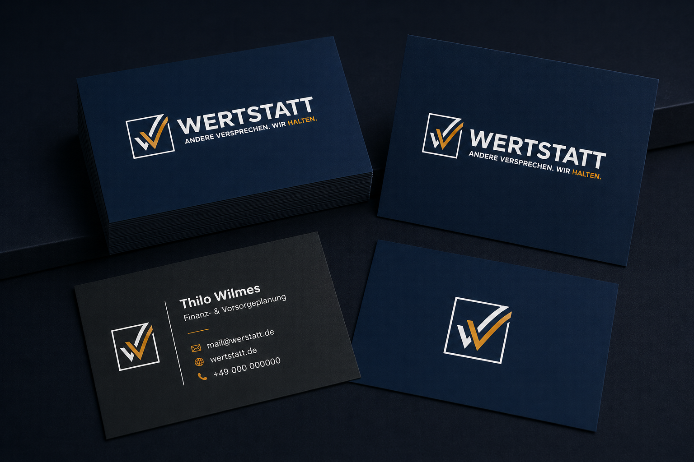
Use heavy uncoated stock and keep the layout sparse. In dark mode, the white and gold elements should emerge from deep navy rather than sit on a light card. Starken Naturkarton nutzen und das Layout reduziert halten. Im Dark Mode sollen Weiss und Gold aus tiefem Navy heraus wirken, nicht auf einer hellen Karte stehen.
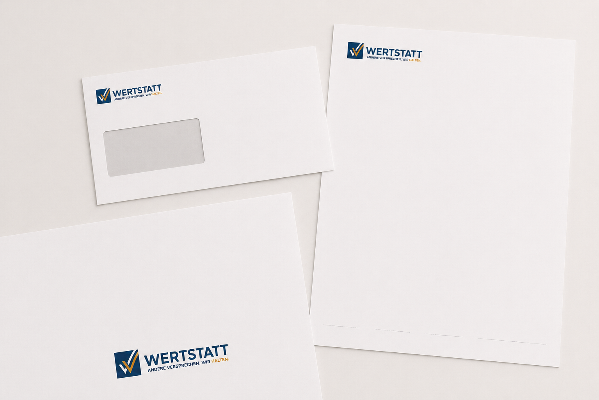
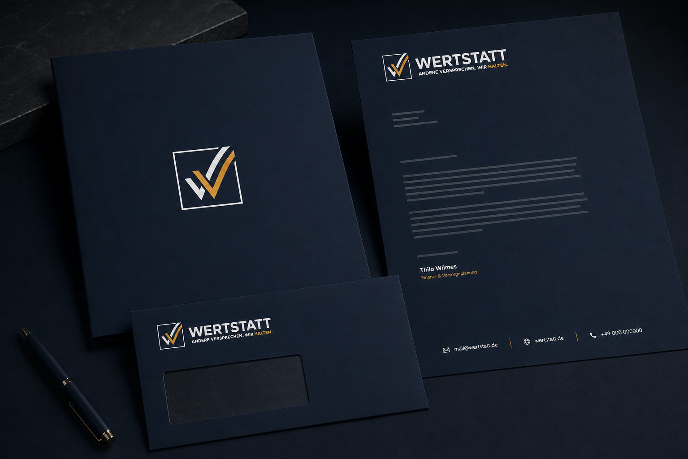
Letterhead, envelope and folder should prove the promise: structured, documented advice rather than product sales. Briefbogen, Umschlag und Mappe beweisen das Versprechen: strukturierte, dokumentierte Beratung statt Produktverkauf.
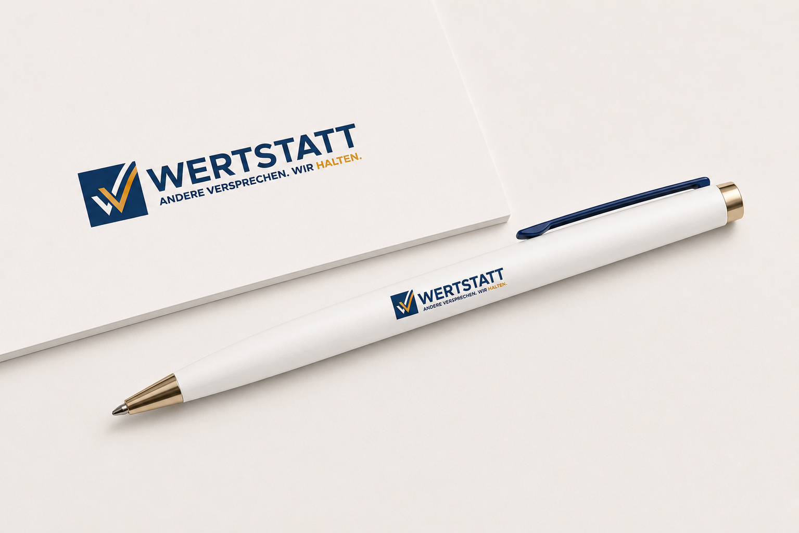
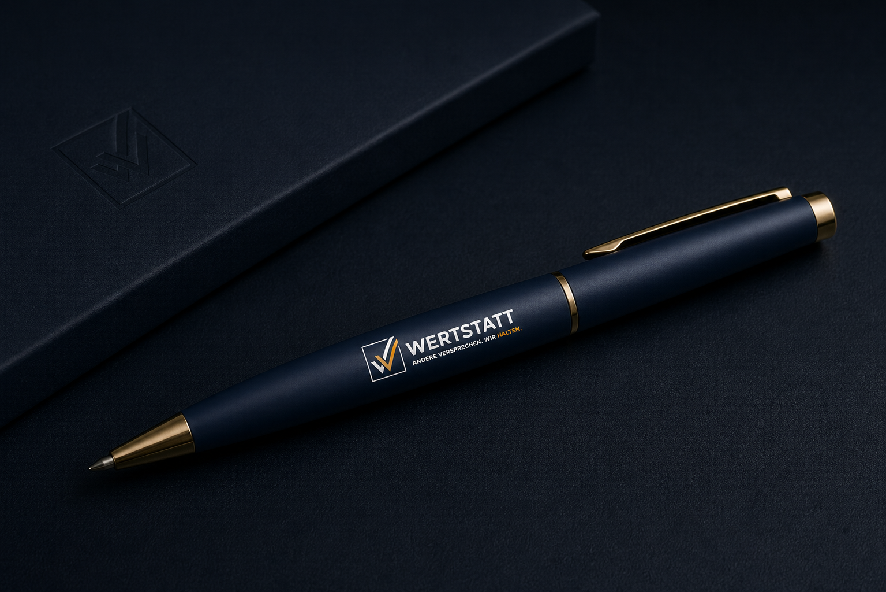
A pen is useful client merchandise if it stays sober: compact mark, small scale, metal details and no slogan at tiny sizes. Ein Stift funktioniert als Kundengeschenk, wenn er ruhig bleibt: kompaktes Zeichen, kleine Skalierung, Metallakzente und kein Claim in Miniaturgroesse.
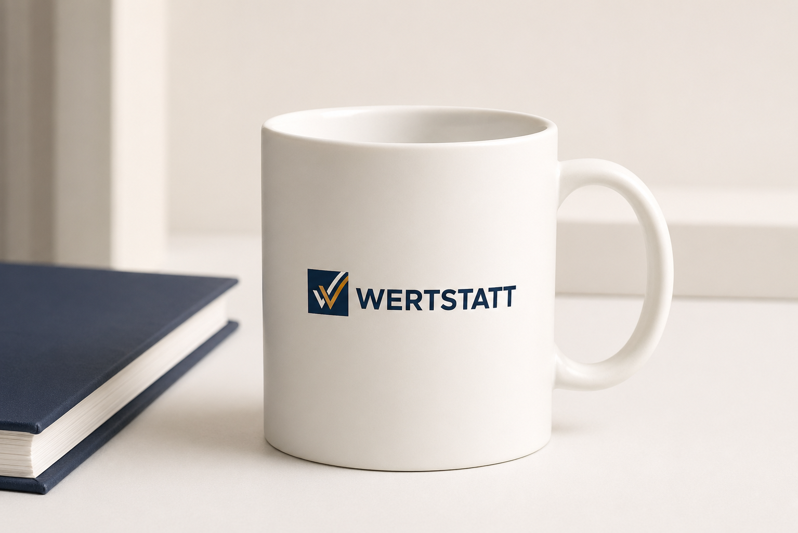
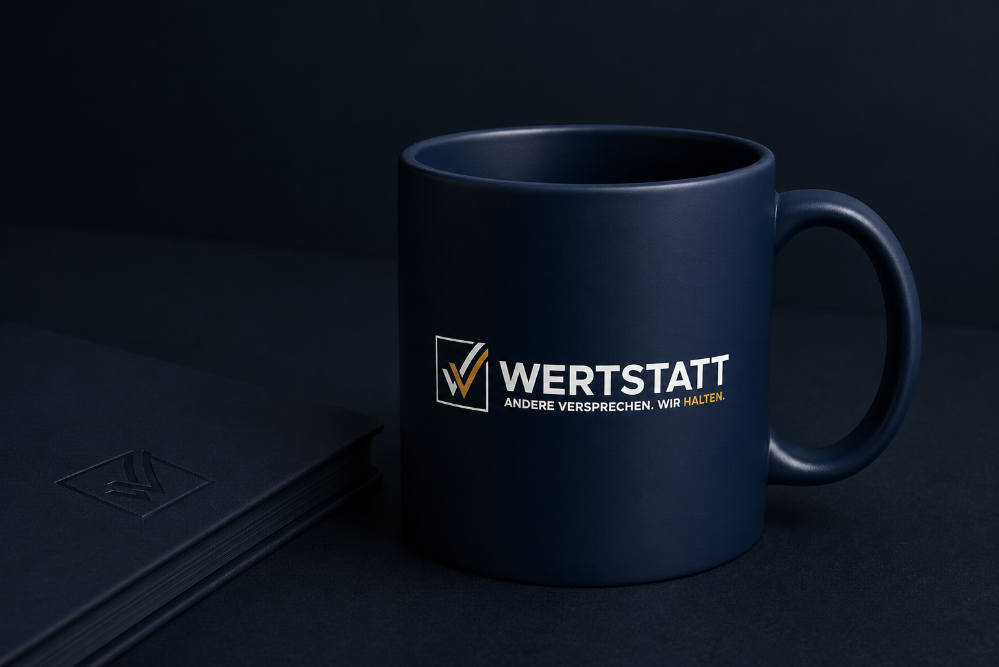
Use only as quiet, practical merchandise. Keep the mark centered, small enough to feel premium and large enough to remain readable. Nur als ruhiges, praktisches Merchandise einsetzen. Das Zeichen zentriert, nicht zu gross, aber klar lesbar halten.
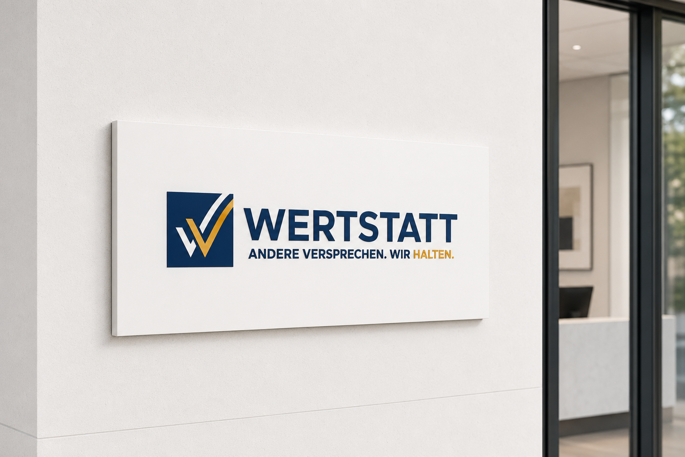
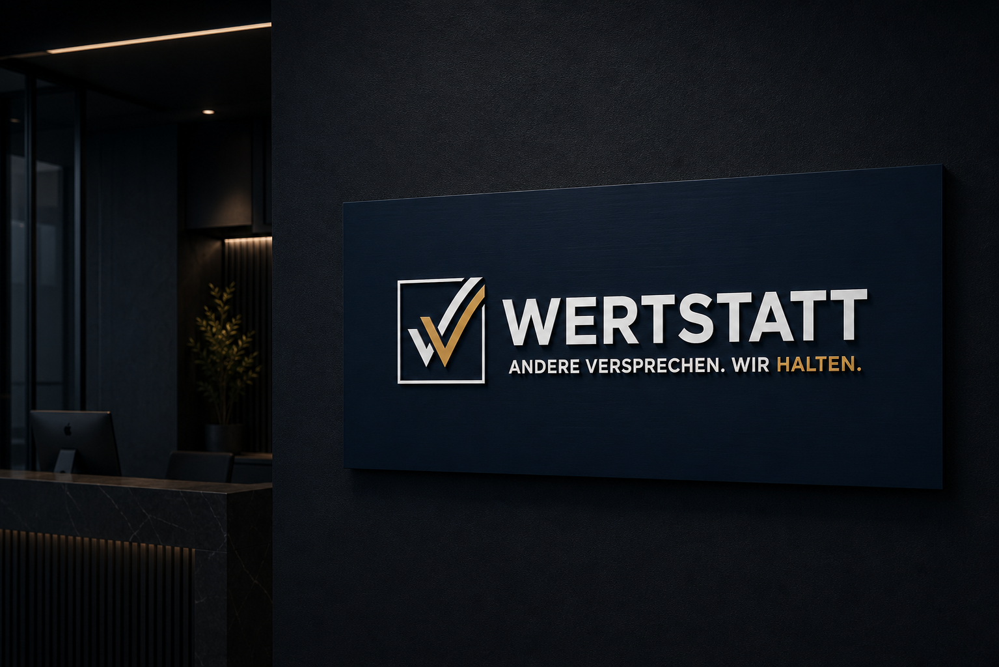
Signage should feel closer to an architectural studio than an insurance office: precise, quiet and confident. Das Schild soll eher wie ein Architekturbuero wirken als wie eine Versicherungsagentur: praezise, ruhig und selbstbewusst.
09 / Downloads
SVG files are the master assets. PNG and favicon exports can be generated directly from the guide when opened in a modern browser. SVG-Dateien sind die Master-Assets. PNG- und Favicon-Exporte koennen direkt im Guide in einem modernen Browser erzeugt werden.
{kind=link}
{kind=link}
{kind=link}
.svg){kind=link}
{kind=link}
{kind=link}
{kind=link}
{kind=link}
{kind=link}
{kind=link}
{kind=link}
{kind=link}
{kind=link}
{kind=link}
{kind=link}
{kind=link}
{kind=link}